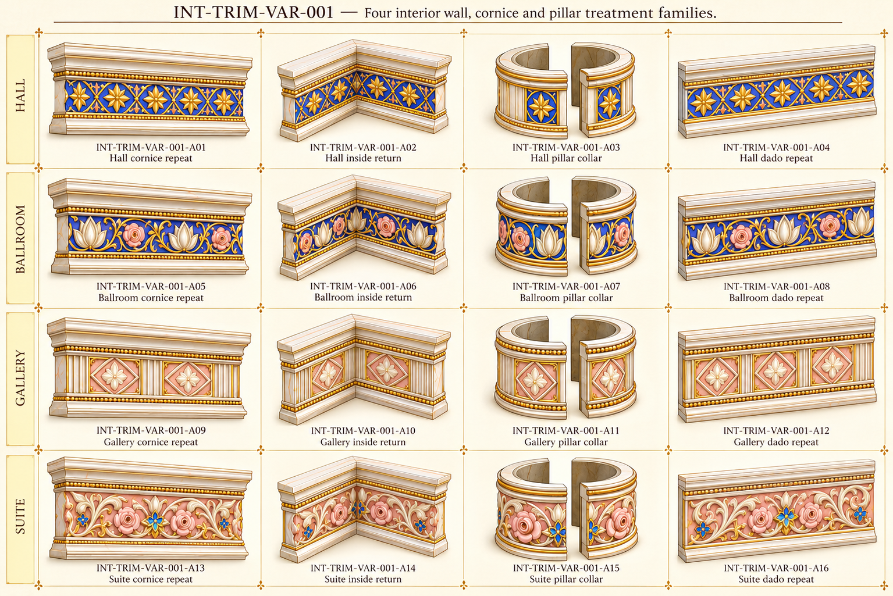

Original source vocabulary

Original palace component references. No accepted models or verified seamless textures/joins.
All active families · Part IDs · Repeat profiles and source/proposed roles

Four requested room variants derived from existing lotus/star/rose palette. These are coordinated proposals, not proof that all four variants appear literally in the source bay.
Split collar halves belong to one assembly ID; actual collar radius and motif end phase need normalization.